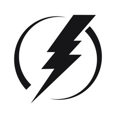

Entre 1990 e 2010, o número de pessoas com acesso à eletricidade cresceu 1.7 bilhão, e como a população global continua a crescer, também crescerá a demanda por energia barata. Uma economia global dependente de combustíveis fósseis e o aumento das emissões de gás carbônico está criando drásticas mudanças no clima, o que impacta diretamente todos os continentes
Garantir o acesso universal à energia e a um preço justo até 2030 significa investir em fontes de energia limpa, como a energia solar, eólica e térmica. Adotar padrões de custos sustentáveis para uma vasta gama de tecnologia também pode reduzir o consumo global de energia em 14 por cento. Isso significa 1300 centrais elétricas a menos no planeta. Expandir a infraestrutura e modernizar a tecnologia para fornecer energia limpa em todos os países em desenvolvimento é um objetivo crucial para que o crescimento econômico colabore com o meio ambiente.
Metas
Meta 1
Acesso universal a energia .
Meta 2
Participação de energia renovável no consumo total de enrgia final.

Meta 3
Proporção da população com acesso a eletricidade .
Meta 4
Redução/corte dos subsídios para combustíveis fósseis .